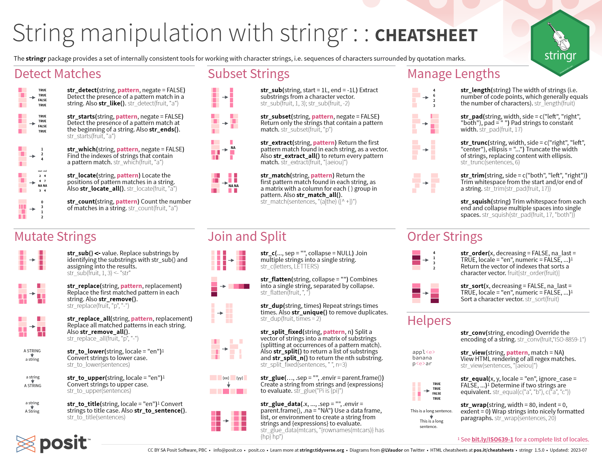
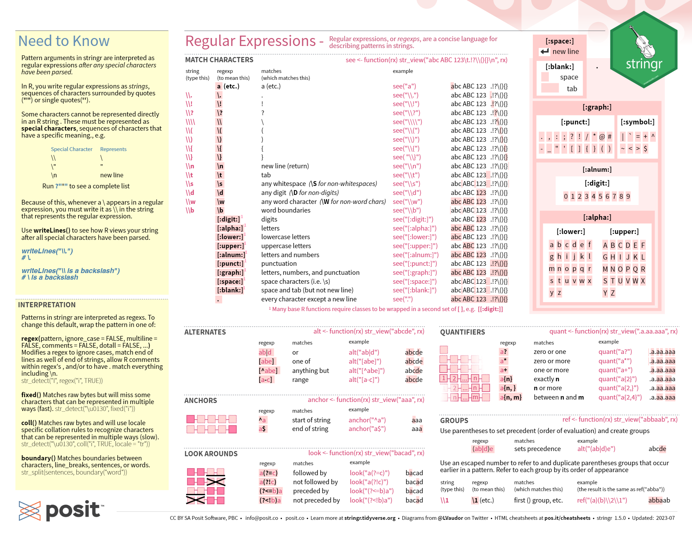
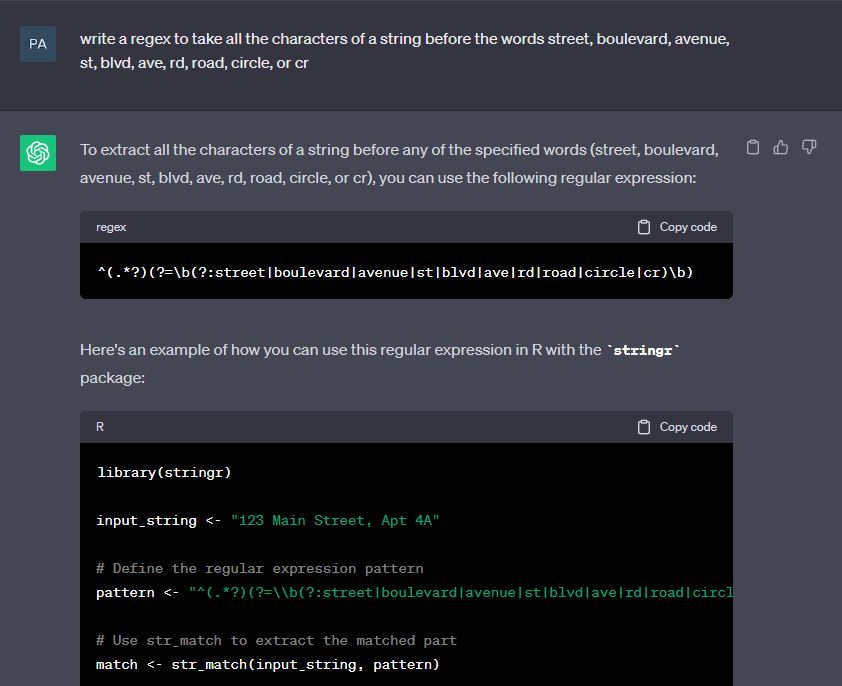

library(tidyverse)
library(janitor)
filmpermits <- read_csv("Film_Permits.csv",
col_types = cols(EventID = col_character())) %>%
clean_names()13. Working with Strings
Video Tutorial
What is a string?
Strings are groups of characters. They can form words, sentences, addresses, categories, or represent other data. Working with strings is going to be essential to cleaning data. Often times we get string and character data that is manually inputted and messy. We can use string modifiers to clean it up. Think of address data for example. What if addresses are misspelled or inconsistent in how they refer to street names?
In this lesson we’ll learn a number of useful functions for manipulating and rewriting strings, using some base R, tidyverse, and a package called stringr.
Separate & Paste
Let’s read in a clean dataframe for film permits from the open data portal.
We can use separate() to split up long string columns and paste() to concatenate strings into new columns
street_closures <- filmpermits %>%
separate_rows(parking_held, sep = ",") %>% #this makes a new row for each street closure listed
separate(parking_held, into = c("street", "cross_street1", "cross_street2"), sep = "between|and") %>% #this separates the string into three different columns
mutate_at(.vars = c("street", "cross_street1", "cross_street2", "borough", "country"), .funs = ~tolower(.)) %>% # a .fns argument takes a function like tolower, which makes all the characters lowercase. start the function with ~ and subsitite . for the argument of the nested function
mutate(intersection1_address = paste(street, "and", cross_street1, borough, country), #paste concatenates strings to create, in this case an address of an intersection
intersection2_address = paste(street, "and", cross_street1, borough, country))StringR
StringR is a package with a number of handy functions. All of them take a string as the first argument, and return the result of your inquiry. There’s tons of possibilities and uses, here’s few examples.


The spacing for the strings in the street columns is weird, I can use str_trim to get rid of white space
library(stringr)
street_closures %>% head() %>% .$street #here I am just printing the first 10 rows of the variable street[1] "commerce street " " seabring street " "amsterdam avenue "
[4] "eagle street " " west street " " freeman street " street_closures %>%
mutate(street = str_trim(street, side = "both")) %>%
head() %>% #here I am just printing the first 10 rows of the variable street that I overwrote
.$street[1] "commerce street" "seabring street" "amsterdam avenue" "eagle street"
[5] "west street" "freeman street" Or perhaps I want to know the total closures on 14th street, but I don’t care if it’s West 14th street or East 14th street, or I’m worried that sometimes it’s in the data as “street” and other times as “st” - making it hard to do an exact match. str_detect finds matches of certain patterns. We can pair it with conditional logic to create a variable that flags if the closure was on the street we care about.
street_closures %>%
filter(borough == "manhattan") %>%
mutate(fourteenth_street = if_else(str_detect(street, "14 |14th"), T, F)) %>% #use these with conditional logic!
count(fourteenth_street) #count how many times!# A tibble: 2 × 2
fourteenth_street n
<lgl> <int>
1 FALSE 5110
2 TRUE 17Or use stringr to change data entry inconsistencies!
street_replace <- street_closures %>%
mutate(street = str_replace(street, "14 ", "14th")) Writing regular expressions, the complex notation you can use to return parts of strings is a great example of something you can use AI for!

# Define the regular expression pattern
pattern <- "^(.*?)(?=\\b(?:street|boulevard|avenue|st|blvd|ave|rd|road|circle|cr)\\b)"
# Use str_match to extract the matched part
str_extract(head(street_closures)$street, pattern)[1] "commerce " " seabring " "amsterdam " "eagle " " west "
[6] " freeman "